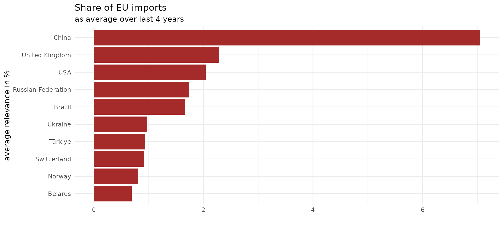

When you are on the free API tier, you will encounter two limits when wanting to calculate on rather large datasets:
you can only make 500 calls per day,
of which each can take up to 100.000 rows.
This information might be updated in the Comtrade API, check the most up to date values here.
So when trying to fetch the maximum amount of data in the minimum amount of days, you want to minimize the amount of requests you need by making them as comprehensive as possible, without ever exceeding the 100k row limit.
Let’s say, we want to know which is the top exporter of the EU in each product class of the Harmonic System. This could be useful, when thinking about dependencies between countries, e.g. when evaluating the usefulness or impact of Regulation such as the EUDR Regulation. Quoting from the ITC: “Under the regulation that entered into force on 29 June 2023, any operator or trader placing [specific] commodities on the EU market or exporting them from the EU, has to be able to prove that the goods do not originate from deforested land (cutoff date 31 December 2020) or contribute to forest degradation”. One question that arises would be, what are the impacts of this regulation on other countries and which of these is particularly important to the EU?
Let’s replicate some of their numbers, e.g. the relevance to the EU indicator from the map of the ITC spotlight cited above.
What is the share of one country in the EU’s imports of a product?
Remember, to get Comtrade data, we need the Commodity Codes, the respective iso3 codes for the countries and a time frame.
First we need to find out, which HS codes, or which goods are affected. We look at Annex 1 of the Regulation. This gives us more or less the following list of commodities for the product class ‘Wood’.
wood <-
c(
"4401",
"4402",
"4403",
"4404",
"4405",
"4406",
"4407",
"4408",
"4409",
"4410",
"4411",
"4412",
"4413",
"4414",
"4415",
"4416",
"4417",
"4418",
"4419",
"4420",
"4421",
"940330",
"940340",
"940350",
"940360",
"940391",
"940610",
"4701",
"4702",
"4703",
"4704",
"4705",
"470610",
"470691",
"470692",
"470693",
"48",
"49",
"9401"
)
wood_df <- data.frame(cmd_code = wood, product_cat = "wood")To calculate the relevance of a product category to the EU, we need to calculate the following:
Where:
In plain English, we need to know how much of a given product comes from one country and which share of the total imports it has.
Let’s get first.
If you were to execute this query, you will get a return object that contains exactly 100k rows and a warning, that if you did not intend to get exactly 100k rows, you have most likely hit the limit.
This seems natural in this case, as we are trying to get data on about 39 commodity classes for 27 EU countries as reporters and about 190 partners in 4 years. This equals to potentially 800k rows.
data_eu_imports <- ct_get_data(
commodity_code = wood,
reporter = eu_countries,
partner = "all_countries",
flow_direction = "import",
start_date = 2018,
end_date = 2022
) Let’s break this down into a simple loop. We could iterate over years, but that would only get us down to about 200k rows for each year. Since we have 250 calls per day, let’s just iterate over each eu country and get the data separately.
## initiate a new instance of an empty tibble()
data_eu_imports <- data.frame()
for(reporter in eu_countries){
## for a simple status, print the country we are at
## you can get a lot fancier with the library `progress` for progress bars
print(reporter)
## assign the result into a temporary object
temp <- ct_get_data(
commodity_code = wood,
reporter = reporter,
partner = "all_countries",
flow_direction = "import",
start_date = 2018,
end_date = 2022
)
## bind the subset to the complete data
data_eu_imports <- rbind(data_eu_imports, temp)
## note that I did not include any sleep() command here to make the requests
## wait for a specified amount of time, the package keeps track of that for
## you automatically and backs off when needed
}
nrow(data_eu_imports)
#> [1] 173358Congratulations, you have now queried 170k rows of data, exceeding the limit of one call to the API!
Getting the data for imports from the World, , should be easy now!
data_eu_imports_world <- ct_get_data(
commodity_code = wood,
reporter = eu_countries,
partner = "World",
flow_direction = "import",
start_date = 2018,
end_date = 2022
)
nrow(data_eu_imports_world)
#> [1] 5004#> `summarise()` has grouped output by 'partner_iso', 'partner_desc', 'flow_desc',
#> 'product_cat'. You can override using the `.groups` argument.
data_eu_imports_world_clean <- data_eu_imports_world |>
left_join(wood_df, by = "cmd_code") |>
select(
reporter_iso,
reporter_desc,
flow_desc,
partner_iso,
partner_desc,
cmd_code,
cmd_desc,
product_cat,
primary_value,
ref_year
) |>
## we now aggregate the imports by the product category and year
## over all reporters, since we are interested
## in the imports of the whole EU
group_by(product_cat, ref_year) |>
summarise(eu_import_product_cat_world = sum(primary_value)) |>
ungroup()
#> `summarise()` has grouped output by 'product_cat'. You can override using the
#> `.groups` argument.
#### relevance to EU
relevance <- data_eu_imports_clean |>
left_join(data_eu_imports_world_clean) |>
## join the two datasets
mutate(relevance_eu = eu_import_product_cat/
eu_import_product_cat_world*100) |>
## calculate the ratio between world imports and imports from one partner |>
select( -flow_desc) |> ungroup()
#> Joining with `by = join_by(product_cat, ref_year)`Let’s see who has the biggest share in the EU import market for wood (excluding EU countries).
top_10 <- relevance |>
filter(!partner_iso %in% eu_countries) |>
group_by(ref_year) |>
slice_max(order_by = relevance_eu, n = 10) |>
select(partner_desc, relevance_eu, ref_year) |>
arrange(desc(ref_year))
head(top_10, 10)
#> # A tibble: 10 × 3
#> # Groups: ref_year [1]
#> partner_desc relevance_eu ref_year
#> <chr> <dbl> <int>
#> 1 China 7.77 2022
#> 2 USA 2.03 2022
#> 3 Brazil 1.96 2022
#> 4 United Kingdom 1.95 2022
#> 5 Türkiye 1.19 2022
#> 6 Ukraine 1.07 2022
#> 7 Russian Federation 0.971 2022
#> 8 Switzerland 0.876 2022
#> 9 Norway 0.799 2022
#> 10 Indonesia 0.656 2022Let’s also do a little sanity check. When summing up all the shares over one year, we should get to 100 %. This seems to hold.
relevance |> ungroup() |>
group_by(ref_year) |>
summarise(sum = sum(relevance_eu))
#> # A tibble: 5 × 2
#> ref_year sum
#> <int> <dbl>
#> 1 2018 100.
#> 2 2019 100.
#> 3 2020 100.
#> 4 2021 100.0
#> 5 2022 100.0Maybe the last year was an outlier? We can calculate the mean relevante a country had in the past 5 years and get the most important countries again.
average_share <- relevance |>
filter(!partner_iso %in% eu_countries) |>
group_by(partner_iso, partner_desc) |>
summarise(mean_relevance_eu = mean(relevance_eu)) |>
ungroup() |>
slice_max(order_by = mean_relevance_eu, n = 10)
#> `summarise()` has grouped output by 'partner_iso'. You can override using the
#> `.groups` argument.
ggplot(average_share) +
geom_col(aes(reorder(partner_desc,mean_relevance_eu), mean_relevance_eu),
fill = 'brown') +
coord_flip() +
theme_minimal() +
labs(title = 'Share of EU imports',
subtitle = 'as average over last 4 years') +
xlab('average relevance in %')+
ylab('')
However, several important caveats are to be made. I have not addressed these, because this vignette is about how to query larger data, not about trade dependencies per se. Hence a real-world example, but without all the complications that you would have to address for a valid analysis.
Dependency on a certain country in terms of how much of a product others import from them, does not equal dependency in terms of this product, as a country might have a substantial production of such items domestically. E.g. if (hypothetically) Argentina would import 90% of its wine from Chile that would not imply that Argentina depends on wine from Chile, if Argentina themselves produce a substantive amount of wine.
We included in our calculation of the total imports of the EU, imports from other EU countries, a.k.a. intra-EU imports. That would mean we probably underestimate how much of total EU imports really come from partner countries outside the EU.
Some of the HS codes for wood are not completely to be included per the Regulation, but I have spared us the intricacies of which ones and how to exclude them here.
Imports data is already better than exports data, because countries have an incentive to get good data to charge tariffs, however the best data for the EU comes from Eurostat, not Comtrade. But since this is about the Comtrade data, it will have to do.